Structure militaire impériale — de l'unité de base au Corps d'Armée.
| Unité | Effectif | Commandé par | Grade type | Commentaires |
|---|---|---|---|---|
| Soldat | 1 | — | Soldat | Base élémentaire |
| Équipe de combat | 4-6 | Chef d'équipe | Caporal | Équipe de base |
| Groupe tactique | 12 | Chef de groupe | Sergent | Environ 2-3 équipes |
| Section d'intervention | 48 | Chef de section | Enseigne | 4 groupes |
| Peloton | 192 | Chef de peloton | Lieutenant | 4 sections |
| Compagnie | 768 | Chef de compagnie | Capitaine | 4 pelotons |
| Bataillon | 3 072 | Chef de bataillon | Commander | 4 compagnies |
| Régiment | 12 288 | Chef de régiment | Commander | 4 bataillons |
| Brigade | 49 152 | Chef de brigade | Moff | 4 régiments |
| Division | 196 608 | Chef de division | Moff | 4 brigades |
| Corps d'armée | 786 432 | Chef de corps | Moff | 4 divisions |
Significations des codes d'alerte impériaux.
Décorations de l'Empire Galactique.
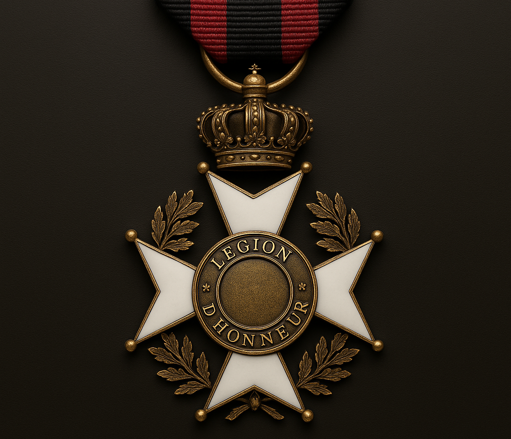
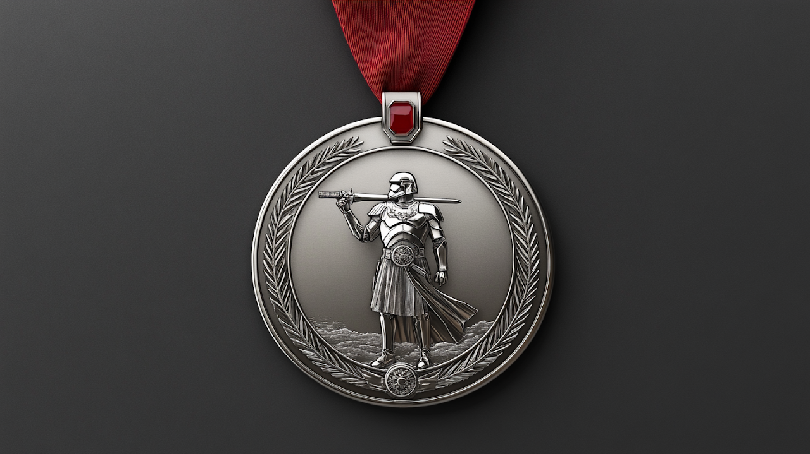
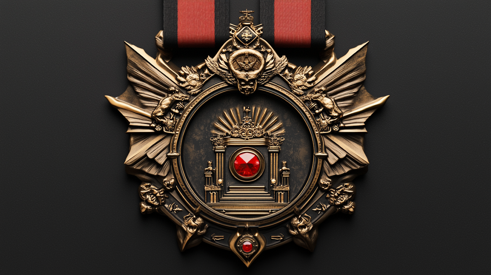
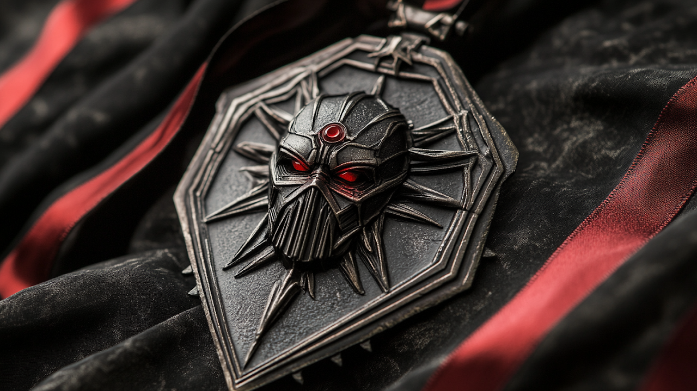
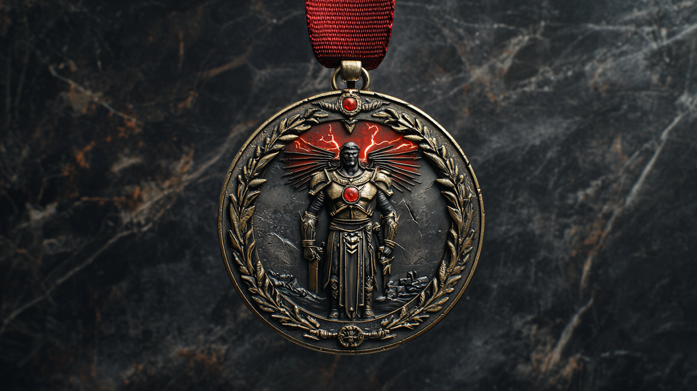
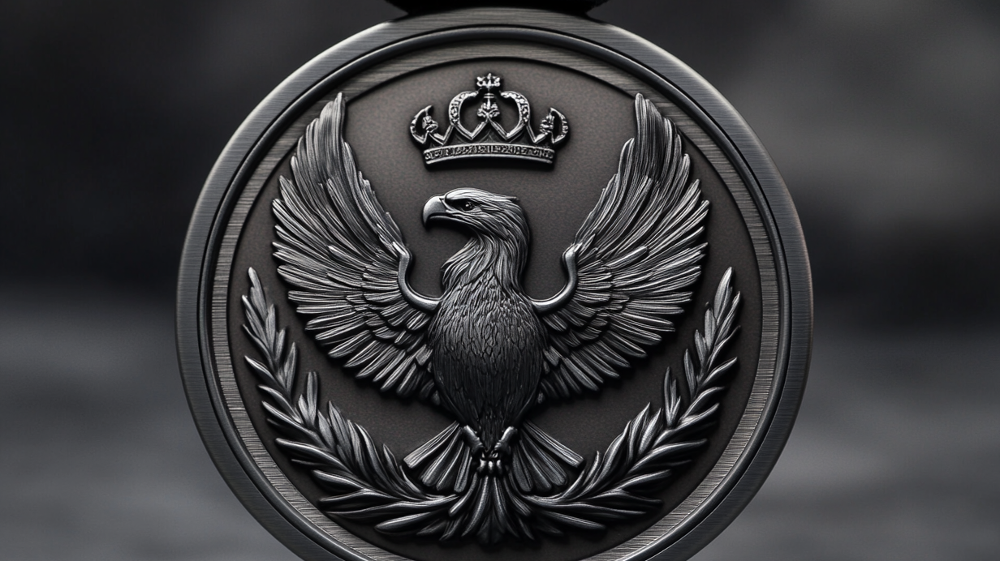
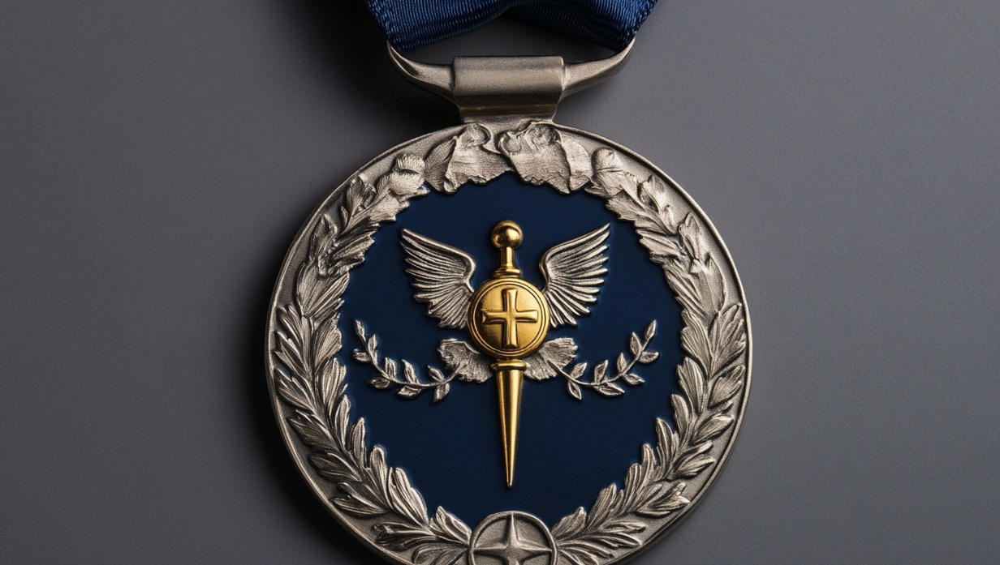
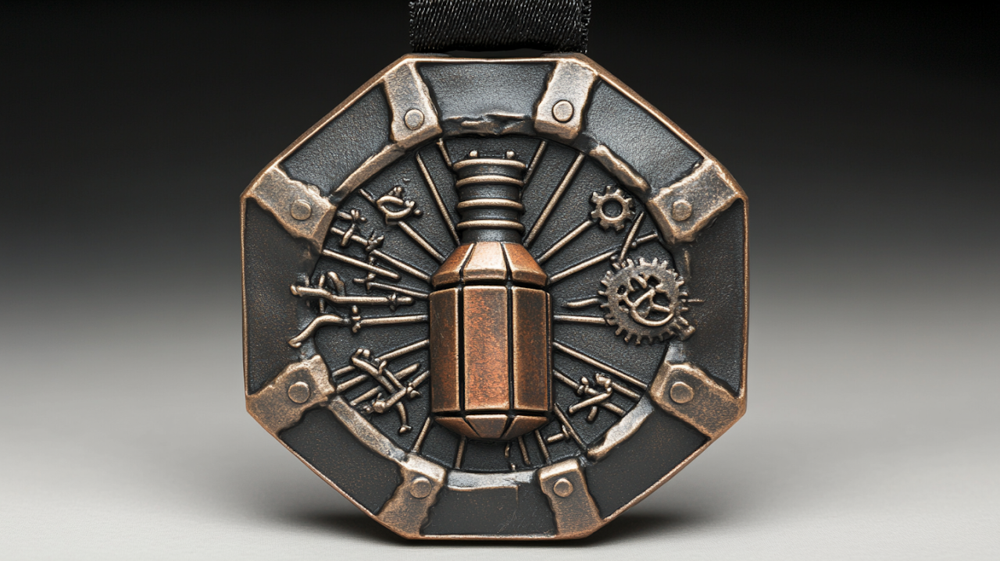
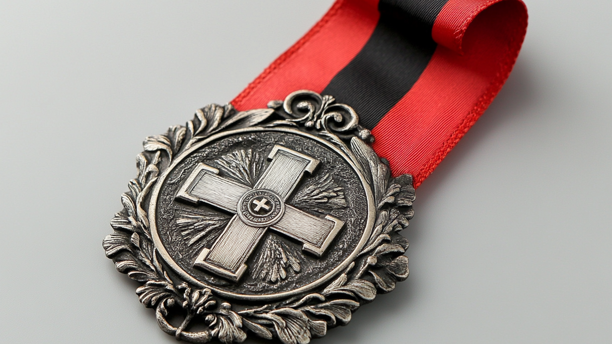
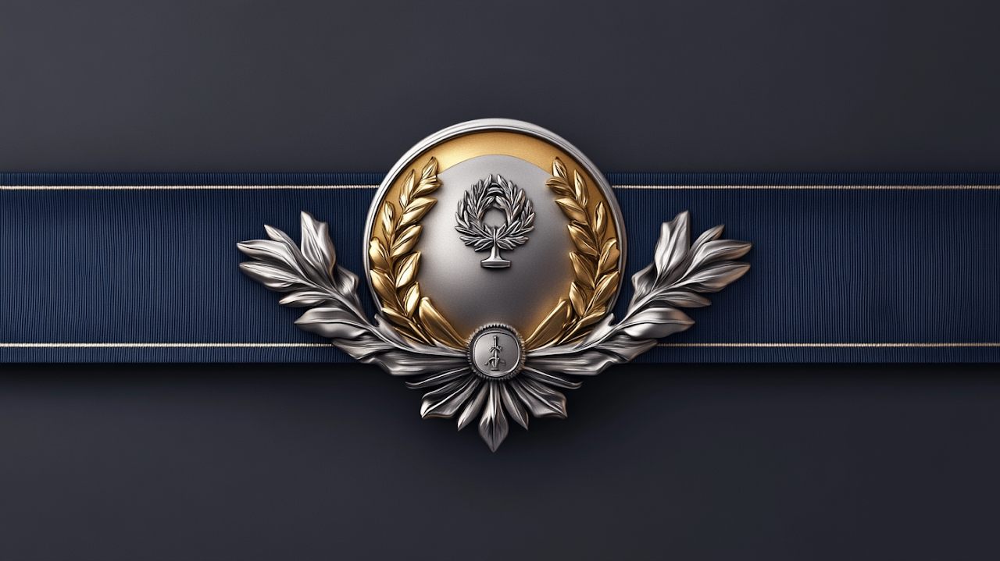
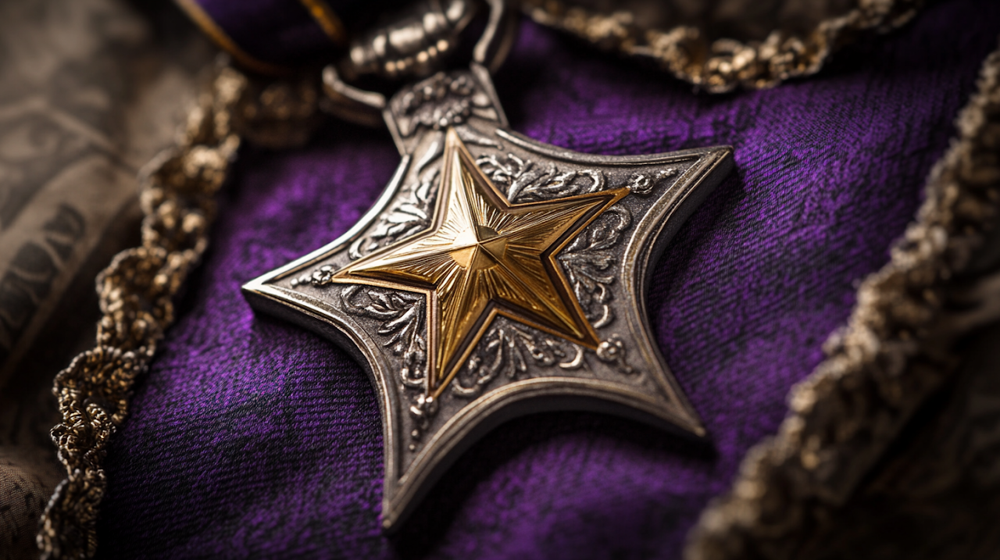
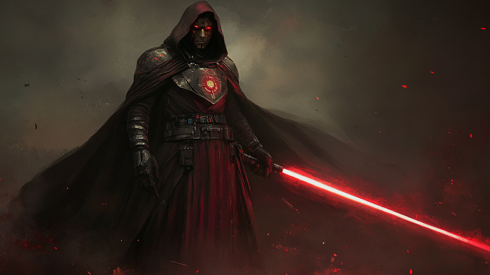
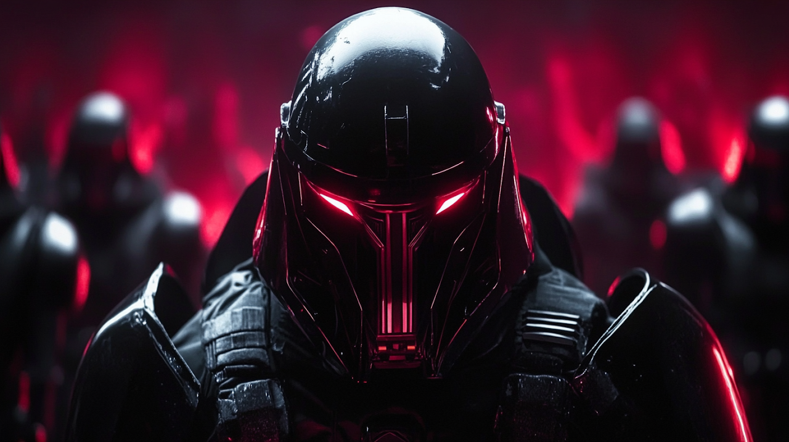